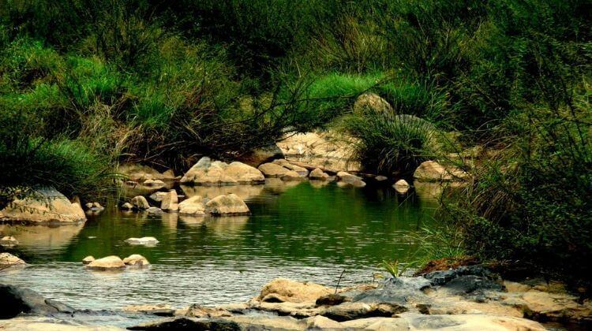

Banasura Sagar dam

Banasura Sagar dam across the Karamanathodu River, a tributary of River Kabini, in Kalpetta, is considered to be the largest earth dam in India and the second largest in Asia. The dam is ideally placed in the foothills of Banasura hills, which got its name from 'Banasura', the son of King Mahabali, the famous ruler of Kerala. It is said that 'Banasura' undertook severe penance on the top of the hills. Banasura hill is the third largest peak in the Western Ghats.
One of the beautiful sights here is the set of islands in the dam's reservoir, which was formed when the reservoir submerged the surrounding areas during monsoon season. These islands with the Banasura hills in the background are a visual treat for those who visit the dam and its premises. Because of this peculiarity, tourists are attracted towards this destination. The dam is very close to Karalad Lake, another tourist hotspot in Wayanad
At Banasura Sagar dam, you can engage yourself in trekking and boating. Trekking is one of the top attractions here. You can plan a trek to the dark forests of Banasura Peak. A boating trip in the lake and the dam is also a unique experience for the travellers. You can choose either speed boat or pedal boat. You can also plan a trip to the small nature park, very near to the boating place. This park with its traditional tree swings will provide cheerful moments for kids.
The best season to be at Banasura Sagar dam is from November to May. You can also plan a visit to temples like Shri Ayyappa Mandir, Shri Nath Mandir, Nirur Shiva Mandir very near to Banasura Sagar Dam.
How to Get Here
Nearest railway station: Kozhikode about 73 km away from Kalpetta
Nearest airport: Calicut International Airport, about 86 km from Kalpetta | Kannur International Airport, about 90 km
Kuruva Dweep
Kuruva Dweep or Kuruva Island is a protected river delta, comprising a cluster of islands over the middle of Kabini River in Wayanad. Spread over 950 acres of land, Kuruva Island is densely populated with rich flora and fauna. The geographical peculiarity of this island makes this place evergreen with a serene ambience.Dwelling deep into this island, you can sight many attractive things like bridges made up of bamboo trees and other rare species of trees. The uninhabited island is home to rare species of birds, orchids, herbal plants etc. Coming so much closer to the nature, you might be feeling Kuruva Island as a nature's gift to Wayanad.
The island is surrounded by streams and you can have a boat ride or rafting through this stream enjoying the enchanting beauty of the island. The boats and rafts are provided by the Kerala Tourism Department and it will take few hours to cover each and every island. Tourists from different parts of the world enjoy the rafting here. The rafts are made up of bamboos providing you a thrilling and exciting journey through the streams
How to Get Here
Nearest railway station: Kozhikode, about 99 km away from Mananthavady
Nearest airport: Kannur International Airport, about 70 km | Calicut International Airport, about 119 km
Chembra Peak

Eight kilometer south of Kalpetta, near to the town of Meppady, lays the highest peak in Wayanad, the Chembra Peak (2,100 m). Chembra peak adjoins Nilgiri hills in Tamil Nadu and Vallarimala in Kozhikode. From the town of Meppady you can reach the peak through walking.The peak is visible from almost all parts of Wayanad. This place is an ideal destination for trekking activities. You have to take prior permission from the Meppady forest office before going for a trek at Chembra Peak. The forest office will be open on all days. Overnight camping is not allowed at Chembra peak as there is a threat from lurking wild animals.
It will take at least three hours to reach the top point of Chembra peak. On the way to this peak, you can sight a heart shaped lake, which is said to have never dried up. It is one of the topmost attractions of this peak. This lake is known as 'hridhayathadakam'.From the top of the peak, you will get wondered by seeing the whole Wayanad. You can also sight Kozhikode, Malappuram and Niligiri districts from here. You will get amazed with the enthralling beauty of the nature here. There are numerous peaks nearby Chambra peak. But it is difficult to climb into those, as they are covered with dense forests. The trekking charges for a group of 10 members to Chembra peak, is Rs.500 and for international tourists the amount is Rs.1000 for a group.
How to Get Here
Nearest railway station: Kozhikode, about 79 km
Nearest airport: Calicut International Airport, about 92 km | Kannur International Airport, about 120 km
Edakkal caves

The name ‘Edakkal’ literally means ‘a stone in between’. Here you can see a cave formed by a heavy boulder straddling a fissure in the rock.Edakkal caves are famous for its pictorial paintings (cave paintings), which are considered to be of 6000 B C. To reach the caves, one has to trek through the Ambukutty Mala. It will take around 45 minutes to climb the hill and you will never get disappointed in your trip to these historic caves.
Inside the cave, you can see two chambers. The lower chamber is 18 ft long, 12 ft wide and 10 ft high and the upper chamber is 96 ft long, 22 ft wide and 18 ft high. You can sight carvings of human, animal figures and objects used by humans, on the walls of the caves. These carvings give great evidence for a highly civilized society who lived in the pre-historic age. Edakkal caves have drawn great attention of archeologists and historians worldwide.Edakkal is the only known place in India with Stone Age carvings. You can see here carvings belonging to Neolithic and Mesolithic age. The human figures of these caves have raised hair and some have masks. They all have archeological significance and are interesting too. Along with these pictorial carvings, you can also watch Tamil and Brahmi Script in Edakkal caves.
How to Get Here
The nearest railway station to Edakkal is at Kozhikode/Calicut which is located at an approximate distance of 87 kms. The nearest airport to Edakkal is also at Calicut and it takes nearly 3 hours to reach Edakkal, if you follow the Calicut-Wayanad road. From Wayanad you will reach the Edakkal Caves in thirty minutes if you take the National Highway 766.